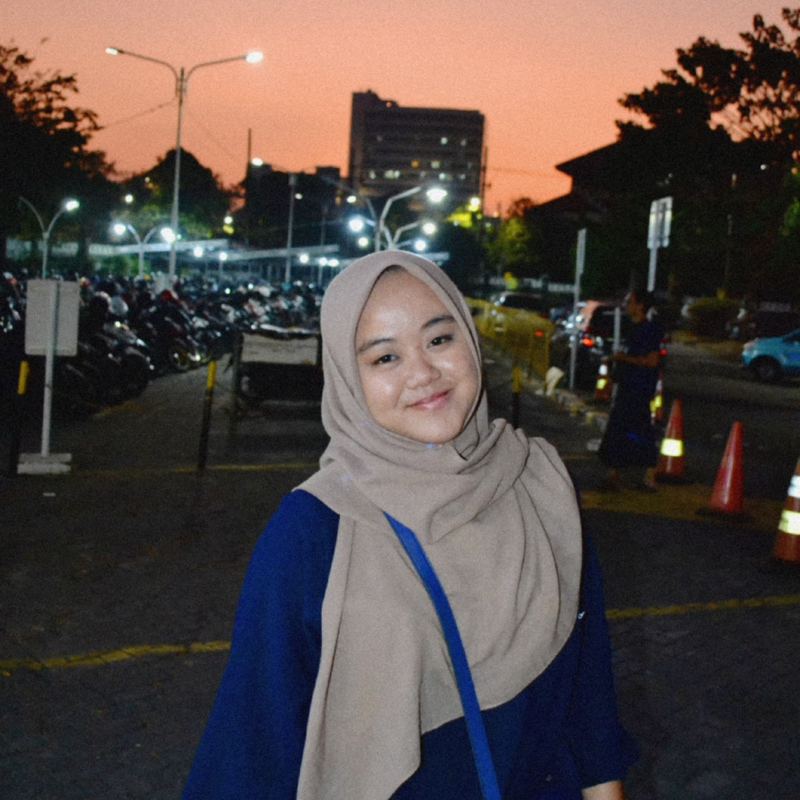

|

|
I am Maitsa Luthfiyyah, a 3rd year Telkom University student majoring in information systems, interested in data management. I joined the EDM research laboratory to hone my skills in the field of data management, taking several data analyst and data scientist training. Apart from honing my hard skills, I am also active as an ILC (Islamic Learning Center) volunteer so I have good communication and management skills. I am confident I can work well in a team with these provisions.
|
Conctact
📞 : 0882-1987-0253
📩 : itsaamaitsa@gmail.com
📌 : Sukaasih IV 42, Bandung
Skills
- Pemograman Data (Python/Matlab)
- Numpy
- Pandas
- Matplotib
- Tableau
- Managerial
- Komunikasi
|
Education
- SDN Andir Kidul Bandung (2009 - 2015)
- SMPN 49 Bandung (2015 - 2018)
- SMKN 13 Bandung (2018 - 2022)
- Telkom University (2022 - Present)
Organizational Experience
-
ILC (Islamic Learning Center)
- Actively involved in the development of adolescent morals
- Won the best team award in the moral development program for adolescents for three consecutive years, 2022 - 2024
-
Keputrian SMKN 13 Bandung
- Trusted by the school to be a speaker at the "Keputrian" event at SMKN 13 Bandung every month
- Had the opportunity to deliver material on critical thinking, as a form of awareness of the ideology of freedom
-
JBC (Java Business Competition)
- Involved in creating the competition concept, responsible for preparing the guidebook, being a liaison and responsible for the jury
-
Teenanger Fun Leadership
- Create event concepts, coordinate with members in the event
division, and ensure that each member understands each task.
|